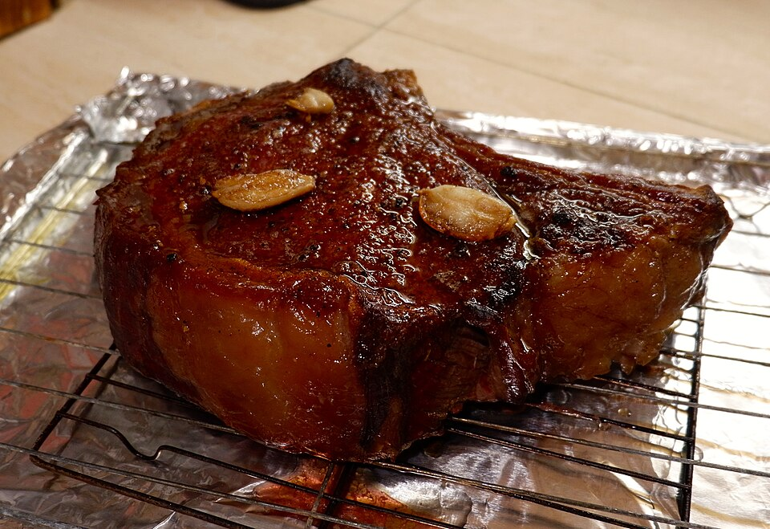

Left Coast Latin Cuisine
Prime Akaushi Wagyu steaks, slow-braised pork belly pibil, and Truffle Street Corn dip uniting coastal Mexican soul with California farm freshness.
Discover The Kitchen →Welcome to The Story of Mi Cariño, South End Charlotte’s premier chef-driven gastro-cantina and mezcalería. We marry coastal Mexican culinary traditions with California produce-driven vibrancy—serving prime Akaushi Wagyu ribeyes, truffle street corn dip, citrus-cured ceviches, and showcasing an unrivaled collection of over 200 rare artisanal mezcals and tequilas.

Butcher-cut Wagyu, coastal raw bar precision, and artisanal mezcal alchemy.
Prime Akaushi Wagyu steaks, slow-braised pork belly pibil, and Truffle Street Corn dip uniting coastal Mexican soul with California farm freshness.
Discover The Kitchen →An extraordinary collection of wild agave mezcals, ancestral clay-pot distillates, rare raicillas, and estate tequilas curated by master mezcaliers.
Explore Agave Library →Candlelit South End ambiance, artisanal handmade copitas, late-night craft cocktails, and an intentional, hospitable dining pace.
Reservation Directives →Open Tuesday through Saturday for dinner, craft agave cocktails, and late-night gatherings. Reservations highly suggested; cashless establishment.
Hours, Directions & Reservations →